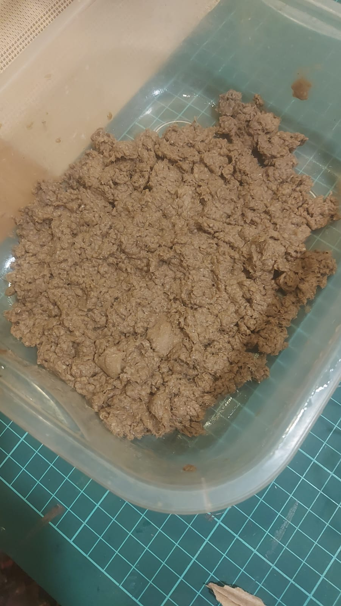
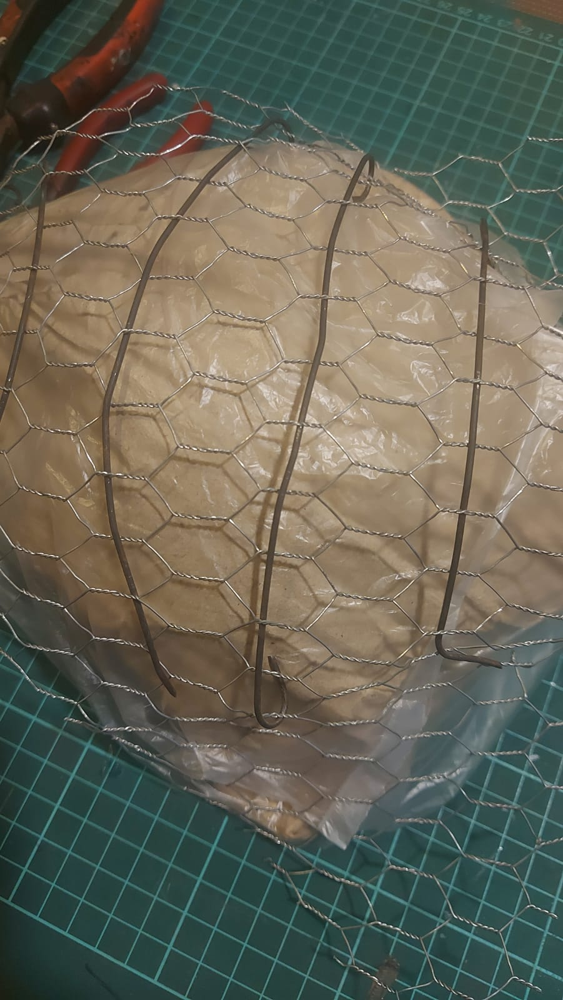

Mapobra — Cuenca Matanza Riachuelo
El proyecto propone una investigación artística sobre la cuenca Matanza–Riachuelo a
partir de procesos materiales, audiovisuales y performativos que abordan la falla,
la obsolescencia y lo no visible del territorio. La obra se articula como una
mapobra: una estructura de gran escala construida con alambre de gallinero, biomateriales y
objetos heterogéneos que funcionan como restos, memorias y sedimentos de una historia fragmentada.
Uno de los núcleos del proyecto es El limo del Riachuelo, una acción de extracción y
registro del barro del río mediante una pala intervenida con una cámara endoscópica. Las imágenes
resultantes no buscan representación paisajística, sino que operan como imágenes operativas
(Parikka): registros técnicos ligados al acto de extracción, al contacto con la materia y
a la lógica infraestructural del territorio. El limo recolectado es posteriormente secado y
sometido a altas temperaturas, esperando la aparición de coloraciones producidas por los metales
presentes en el sedimento.
A esta dimensión se suma un video performativo que documenta la producción fallida de biomateriales,
realizada con vestimenta quirúrgica. El registro expone el proceso, el error y la imposibilidad de control,
produciendo una imagen perforada (Dubois) que hace visibles las condiciones materiales, técnicas y simbólicas de la obra.
Lejos de proponer una imagen cerrada o totalizante, el proyecto asume la costura, el resto y el fallo como formas
de conocimiento y de resistencia frente a los discursos de eficiencia y transparencia tecnológica.



